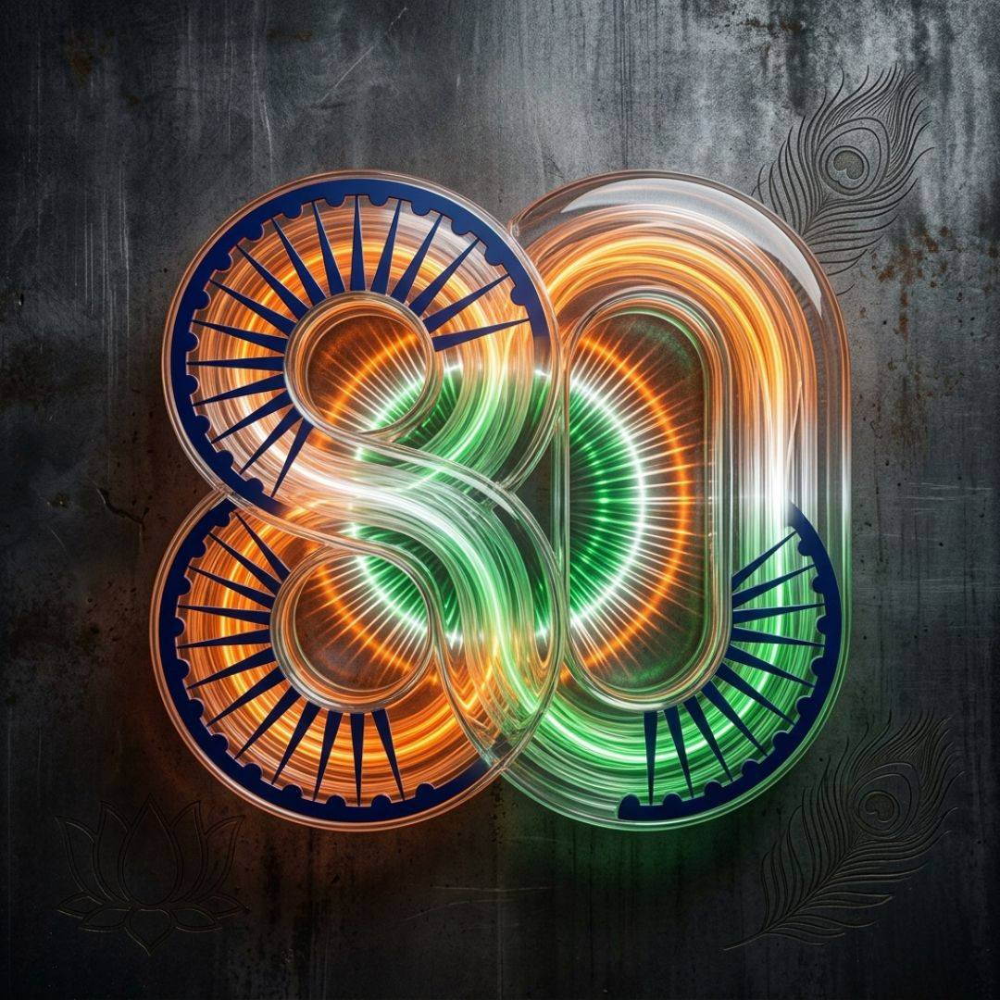
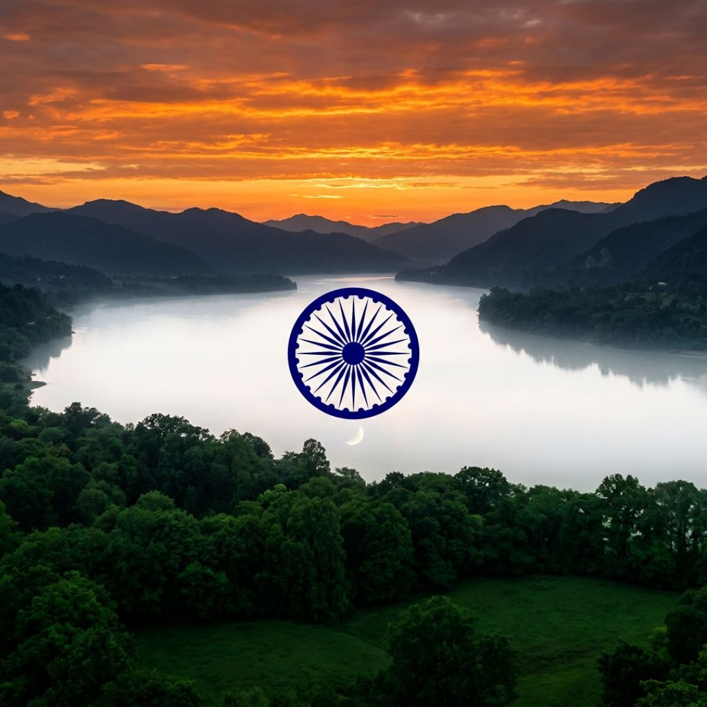
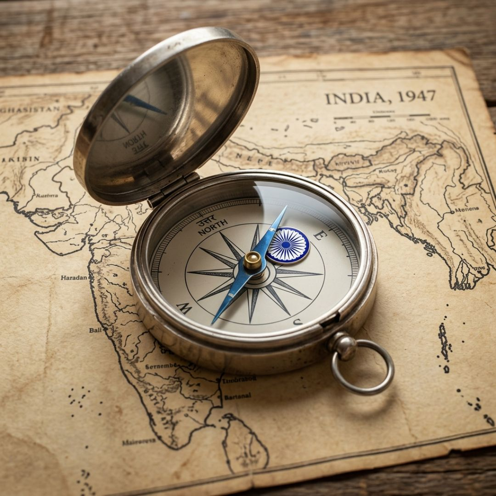
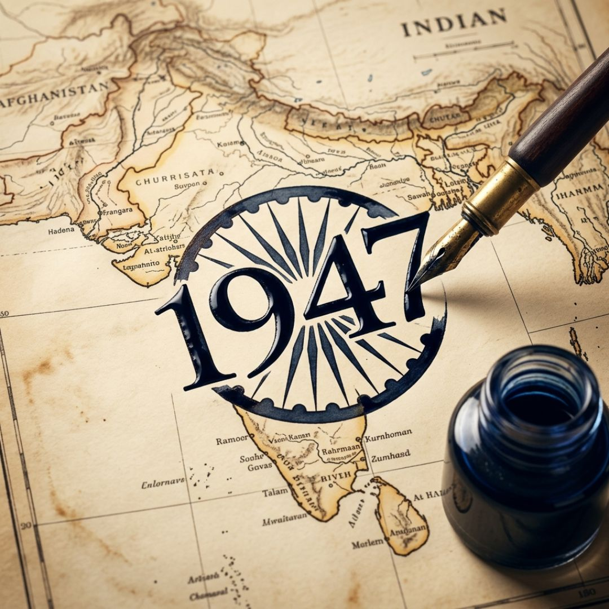
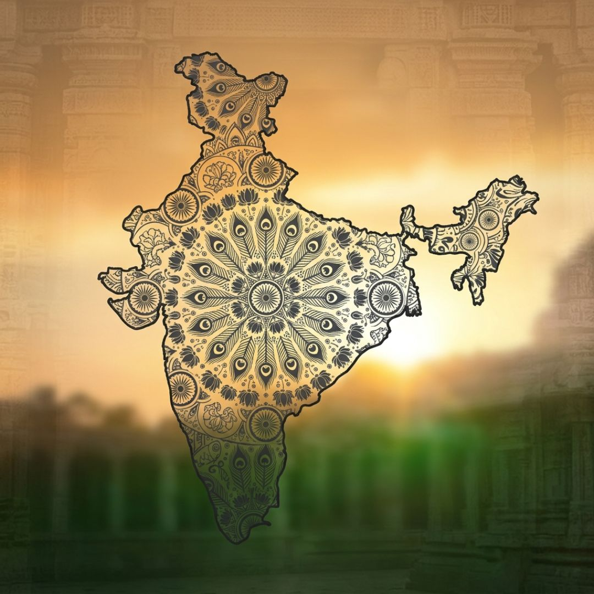
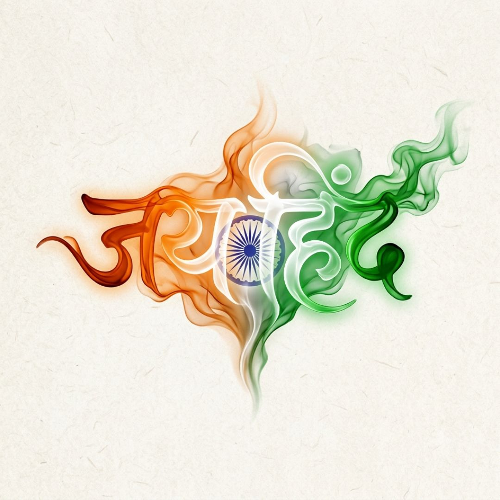
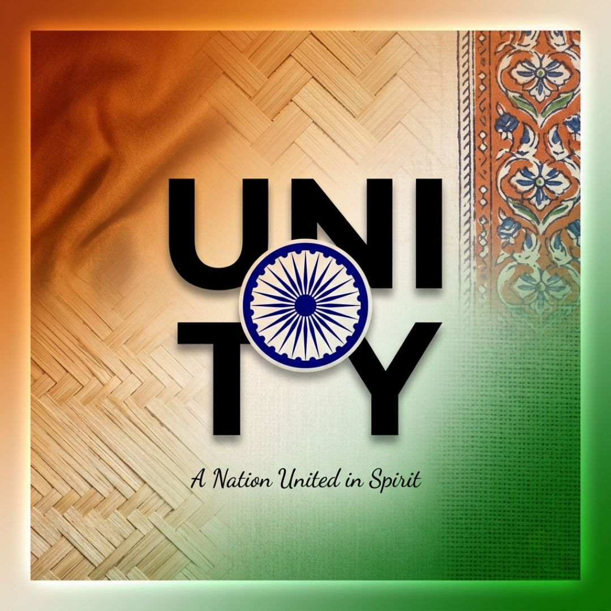

India's 80th Independence Day — August 15, 2026 | The Complete Resource for Students, Parents & Teachers
August 15, 2026 marks India's 80th Independence Day — a landmark milestone in the story of the world's largest democracy. On this day in 1947, India emerged from nearly 200 years of British colonial rule to take her rightful place among the free nations of the world. At the stroke of midnight, Jawaharlal Nehru's electrifying "Tryst with Destiny" speech rang out, the Tiranga was unfurled over Red Fort, and a billion-strong civilisation breathed free for the first time in generations.
Eight decades later, India stands as a proud, diverse, and growing democracy — home to 1.4 billion citizens, a thriving economy, world-class scientists, artists, and leaders, and a culture that stretches back thousands of years. The 80th Independence Day is a moment to reflect, to celebrate, and to recommit to the values our freedom fighters dreamed of: liberty, equality, justice, and unity in diversity.
At Rainbow International School, Thane, Independence Day is not just a holiday — it is a day of learning, patriotism, and character. This page is your complete guide to everything Independence Day 2026.
🇮🇳 2026 marks India's 80th Independence Day — a proud, historic milestone.
1947 was the 1st. 2026 is the 80th (1947 + 79 years = 2026).
From Nehru's "Tryst with Destiny" to today's thriving democracy — 80 years of sovereignty, progress, and pride.

80 years of India's independence — August 15, 2026

The Ashoka Chakra — symbol of India's eternal progress
India's journey to independence is one of the most inspiring stories in human history — a story of courage, sacrifice, non-violent resistance, and the unshakeable belief that a people's right to self-determination cannot be suppressed forever.

India, 1947 — a nation finding its direction
| Year | Event | Significance |
|---|---|---|
| 1757 | Battle of Plassey | British East India Company defeats Nawab of Bengal; establishes British dominance in India |
| 1857 | First War of Independence | First major organised revolt against British rule; called the Sepoy Mutiny by the British |
| 1885 | Indian National Congress Founded | Created a unified platform for India's independence movement |
| 1905 | Partition of Bengal / Swadeshi Movement | Lord Curzon partitions Bengal; mass boycott of British goods begins |
| 1915 | Mahatma Gandhi Returns to India | After South Africa, Gandhi joins and transforms the movement into a mass awakening |
| 1919 | Jallianwala Bagh Massacre | British General Dyer orders troops to fire on unarmed civilians in Amritsar; hundreds killed |
| 1920 | Non-Cooperation Movement | Gandhi launches first nationwide movement; millions boycott British institutions |
| 1930 | Dandi March (Salt Satyagraha) | Gandhi walks 240 miles to protest salt tax; sparks global attention and mass civil disobedience |
| 1942 | Quit India Movement | Gandhi's "Do or Die" call; demands immediate British withdrawal from India |
| 1943–45 | Indian National Army (Azad Hind Fauj) | Netaji Subhas Chandra Bose raises an army of 40,000 to fight for India's freedom |
| 1946 | Royal Indian Navy Mutiny | Indian sailors revolt; Britain realises India is ungovernable |
| 1947 | August 15 — Independence | India becomes a sovereign democratic republic; Nehru's "Tryst with Destiny" at midnight |

1947 — the year India's destiny was written
India's national symbols represent the country's rich heritage, culture, and values. Adopted after independence, these symbols unite 1.4 billion Indians across all languages, religions, and regions.

India — one nation, many cultures, one identity
Three horizontal bands — Saffron: courage & sacrifice; White: peace & truth; Green: faith & prosperity. The 24-spoked navy Ashoka Chakra at centre represents the eternal wheel of dharma. Designed by Pingali Venkayya.
Written by Nobel laureate Rabindranath Tagore; officially adopted as national anthem on January 24, 1950. Only the first stanza is sung officially. Full duration: 52 seconds.
Declared national animal in 1973 under Project Tiger. The Bengal Tiger symbolises strength, grace, and power. India is home to over 70% of the world's wild tiger population.
Declared national bird in 1963. Known for its spectacular plumage and courtship dance, the peacock is a symbol of beauty, grace, and pride. Sacred in Indian mythology, associated with Kartikeya.
Symbol of purity, beauty, wealth, and knowledge. Revered in Hinduism, Buddhism, and Jainism. The lotus rises from muddy water to bloom in sunlight — a metaphor for India's growth and resilience.
Cultivated in India for over 4,000 years. India is the world's largest producer of mangoes. The mango is associated with love, fertility, and prosperity in Indian culture and tradition.
Whether you need a 10-line essay, a 100-word summary, or a full 500-word composition — in English, Hindi, or Marathi — we have you covered. Click any tab and use the Copy button to instantly copy the text.
Independence Day, celebrated every August 15, is one of India's most cherished national holidays. On August 15, 1947, after nearly two centuries of colonial rule, India finally emerged as a free and sovereign nation. The first Prime Minister, Jawaharlal Nehru, hoisted the national flag at the Red Fort and delivered his historic "Tryst with Destiny" speech at the stroke of midnight.
In 2026, India proudly celebrates its 80th Independence Day — a moment to honour the countless freedom fighters who laid down their lives for this great nation. Schools and communities across the country mark this day with flag-hoisting, patriotic songs, speeches, and cultural programmes.
Let us remember the sacrifices of our freedom fighters and carry forward their dream of a united, prosperous, and just India. Jai Hind!
India's Independence Day, celebrated on August 15, stands as one of the most significant days in our nation's history. On this day in 1947, after nearly 200 years of British colonial rule, India emerged as a free and sovereign democratic republic. The journey to independence was long and hard-fought — marked by the extraordinary courage and sacrifice of millions who believed that freedom was not just a right, but a destiny.
In 2026, India celebrates its 80th Independence Day — a milestone anniversary that calls for reflection, gratitude, and renewed commitment. From the Sepoy Mutiny of 1857 to Mahatma Gandhi's non-violent resistance, from the Dandi March of 1930 to the Quit India Movement of 1942, India's freedom struggle was a testament to the unshakeable will of her people.
On the eve of independence, Jawaharlal Nehru addressed the nation with his iconic "Tryst with Destiny" speech: "At the stroke of the midnight hour, when the world sleeps, India will awake to life and freedom." These words echo across generations, reminding us of the magnitude of what was achieved on that historic midnight.
Independence Day is celebrated with great enthusiasm across the country. The Prime Minister hoists the national flag at the Red Fort in New Delhi and addresses the nation. Schools and colleges hold flag-hoisting ceremonies, patriotic songs are sung, and cultural programmes celebrate India's rich heritage.
The Indian national flag — the Tiranga — with its saffron, white, and green bands and the 24-spoked Ashoka Chakra, is the symbol of India's pride and identity. As students of Rainbow International School, Thane, we celebrate this day with pride and gratitude. Jai Hind!
India's Independence Day is not merely a public holiday — it is the celebration of a miracle. On August 15, 1947, a civilisation that had endured centuries of struggle, subjugation, and sacrifice finally breathed free. A nation of extraordinary diversity — in language, faith, culture, and geography — emerged from colonial rule to declare, in one collective voice: we are free.
In 2026, as India observes its 80th Independence Day, we stand at a moment of profound reflection. Eighty years ago, India was a newly born nation — fragile yet full of promise. Today, she is the world's largest democracy, a global economic power, a space-faring nation, and home to 1.4 billion citizens.
The road to independence was neither short nor easy. India's freedom struggle spans nearly a century of organised resistance. When Mahatma Gandhi returned to India in 1915, the movement transformed into a mass awakening — one rooted in truth (satya) and non-violence (ahimsa).
The Jallianwala Bagh massacre of 1919 shook the nation to its core. The Non-Cooperation Movement (1920), the Dandi March (1930), and the Quit India Movement (1942) were waves of defiance that Britain could neither crush nor ignore. Revolutionaries like Bhagat Singh, Chandrashekhar Azad, and Netaji Subhas Chandra Bose showed the world that India's youth were not afraid to sacrifice their lives for freedom.
On the night of August 14, 1947, Jawaharlal Nehru addressed the Constituent Assembly: "At the stroke of the midnight hour, when the world sleeps, India will awake to life and freedom." With those words, a new era began. The Tiranga was hoisted for the first time over Red Fort, and millions wept tears of joy.
Today, as we celebrate 80 years of independence, we celebrate the vision of Dr B R Ambedkar, who gave India its Constitution — a document that guaranteed every citizen fundamental rights and equality before law. As students of Rainbow International School, Thane, we carry forward the values our nation was built upon — liberty, equality, justice, and unity in diversity. Jai Hind! Jai Bharat! 🇮🇳
स्वतंत्रता दिवस भारत का एक महान राष्ट्रीय पर्व है, जो प्रत्येक वर्ष १५ अगस्त को हर्षोल्लास के साथ मनाया जाता है। १५ अगस्त, १९४७ के शुभ दिन, लगभग दो शताब्दियों की ब्रिटिश औपनिवेशिक दासता के बाद भारत एक स्वतंत्र और संप्रभु राष्ट्र बना।
वर्ष २०२६ में हम गर्व के साथ भारत का ८०वाँ स्वतंत्रता दिवस मना रहे हैं। इस अवसर पर हम महात्मा गाँधी, जवाहरलाल नेहरू, भगत सिंह, चंद्रशेखर आज़ाद, रानी लक्ष्मीबाई और नेताजी सुभाषचंद्र बोस को श्रद्धांजलि अर्पित करते हैं।
इस दिन देशभर में ध्वजारोहण समारोह आयोजित होते हैं। प्रधानमंत्री लाल किले की प्राचीर से राष्ट्रीय ध्वज फहराते हैं और राष्ट्र को संबोधित करते हैं। रेनबो इंटरनेशनल स्कूल, ठाणे में हम प्रत्येक वर्ष इस दिन को बड़े उत्साह के साथ मनाते हैं।
आइए, इस पावन दिवस पर हम सभी यह संकल्प लें कि हम अपने देश की एकता, अखंडता और संविधान के मूल्यों की सदैव रक्षा करेंगे। भारत माता की जय! जय हिंद!
स्वातंत्र्य दिन हा भारताचा अत्यंत महत्त्वाचा राष्ट्रीय सण आहे. दरवर्षी १५ ऑगस्ट रोजी हा दिवस अत्यंत उत्साहाने आणि अभिमानाने साजरा केला जातो. १५ ऑगस्ट, १९४७ रोजी सुमारे दोन शतकांच्या ब्रिटिश राजवटीनंतर भारत एक स्वतंत्र, सार्वभौम आणि लोकशाही राष्ट्र म्हणून अस्तित्वात आला.
२०२६ मध्ये भारत आपला ८०वा स्वातंत्र्य दिन साजरा करत आहे. महात्मा गांधी, पंडित जवाहरलाल नेहरू, लोकमान्य बाळ गंगाधर टिळक, भगतसिंग, चंद्रशेखर आझाद, वीर सावरकर आणि नेताजी सुभाषचंद्र बोस यांच्यासारख्या असंख्य महान नेत्यांनी देशाच्या स्वातंत्र्यासाठी सर्वस्व अर्पण केले.
रेनबो इंटरनॅशनल स्कूल, ठाणे येथे आपण हा दिवस अत्यंत उत्साहाने साजरा करतो. या पावन दिनी आपण सर्वांनी एकत्र येऊन संकल्प करूया — आपल्या देशाची एकता, अखंडता आणि लोकशाही मूल्यांचे सदैव रक्षण करू. भारत माता की जय! जय हिंद!
Copy and use these ready-to-deliver speeches for your school's Independence Day programme. Available in English, Hindi, and Marathi — for every age group.
Good morning, respected Principal, dear teachers, and my fellow students.
Today, we stand here to celebrate India's 80th Independence Day — a day that fills every Indian heart with immense pride and deep gratitude. On August 15, 1947, after nearly two centuries of colonial rule, our nation finally emerged free. The credit for this freedom goes to our countless freedom fighters who sacrificed their comfort, their families, and their very lives for the dream of a free India.
From Mahatma Gandhi's peaceful protests to Bhagat Singh's fearless courage, from Netaji's battle cry to Nehru's eloquent vision — every act of defiance brought us closer to this moment.
As students of Rainbow International School, let us promise today to honour their legacy — by studying hard, respecting every citizen, and becoming responsible, compassionate leaders who will carry India forward.
Happy Independence Day! Jai Hind! Vande Mataram!
Good morning, respected Principal Ma'am / Sir, our honoured teachers, distinguished guests, and my dear friends.
We gather here today not just to observe a national holiday, but to celebrate a miracle. On August 15, 1947 — exactly 79 years ago today — India achieved what seemed impossible to many: freedom. On this day in 2026, we mark our nation's 80th Independence Day.
Let us close our eyes for a moment and travel back to the midnight of August 14, 1947. And then — a voice rang out. Jawaharlal Nehru spoke: "At the stroke of the midnight hour, when the world sleeps, India will awake to life and freedom." In that moment, a billion hearts beat as one. The Tiranga rose over Red Fort. India was free.
But let us not forget the price of that freedom. Bhagat Singh was hanged at just 23. Chandrashekhar Azad chose death over surrender. Thousands were imprisoned in the Cellular Jail in the Andaman Islands. Mahatma Gandhi walked thousands of miles, fasted for weeks, and faced the might of an empire — armed with nothing but truth and non-violence.
Eighty years later, India stands tall. We are the world's largest democracy. Our scientists have sent missions to the Moon and Mars. As students of Rainbow International School, we have a special responsibility — we are the future of this nation.
So today, as we unfurl the Tiranga and sing Jana Gana Mana, let us make a promise — to be worthy of the freedom gifted to us. A promise to build the India our freedom fighters dreamed of.
Happy 80th Independence Day! Jai Hind! Jai Bharat! Vande Mataram!
सभी को सुप्रभात। आदरणीय प्राचार्य जी, हमारे प्रिय शिक्षकगण और मेरे प्यारे साथियो —
आज हम भारत का ८०वाँ स्वतंत्रता दिवस मना रहे हैं। यह वह पवित्र दिन है जब सन् १९४७ में हमारा देश, लगभग दो सौ वर्षों की अंग्रेज़ों की दासता से मुक्त हुआ था।
इस आज़ादी के लिए महात्मा गाँधी, नेताजी सुभाषचंद्र बोस, भगत सिंह, चंद्रशेखर आज़ाद और अनगिनत वीरों ने अपने प्राण न्योछावर किये। उनका बलिदान हमें सदा प्रेरित करता रहेगा।
आज हम सभी को यह संकल्प लेना चाहिए कि हम अपने देश को सदा एकजुट रखेंगे और एक बेहतर, मज़बूत और समृद्ध भारत बनाने में अपना योगदान देंगे।
स्वतंत्रता दिवस की हार्दिक शुभकामनाएँ! भारत माता की जय! जय हिंद!
सर्वांना सुप्रभात! आदरणीय मुख्याध्यापक महोदय / महोदया, आदरणीय शिक्षकवर्ग आणि माझ्या प्रिय मित्र-मैत्रिणींनो —
आज आपण भारताचा ८०वा स्वातंत्र्य दिन साजरा करत आहोत. हा तो पवित्र दिवस आहे जेव्हा १५ ऑगस्ट, १९४७ रोजी आपल्या देशाला ब्रिटिश राजवटीपासून स्वातंत्र्य मिळाले.
महात्मा गांधी, लोकमान्य बाळ गंगाधर टिळक, भगतसिंग, नेताजी सुभाषचंद्र बोस यांच्यासारख्या अनेक थोर वीर स्वातंत्र्यसैनिकांनी आपल्या जीवनाचे बलिदान दिले. त्यांच्या त्यागाला आपण मनःपूर्वक वंदन करतो.
आपण सर्वांनी मिळून प्रतिज्ञा करूया — आपण आपल्या मातृभूमीची सेवा करू आणि एक सशक्त, न्यायी आणि समृद्ध भारत घडवण्यासाठी सदैव प्रयत्नशील राहू.
स्वातंत्र्य दिनाच्या हार्दिक शुभेच्छा! भारत माता की जय! जय हिंद!
Use these powerful slogans in your Independence Day speeches, posters, social media posts, or school programmes. Click any card to copy instantly.

जय हिंद — India's eternal battle cry
English Slogans
हिंदी नारे
मराठी घोषणा
On the eve of India's independence — the night of August 14, 1947 — Jawaharlal Nehru stood before the Constituent Assembly of India and delivered what is considered one of the greatest speeches in the history of human freedom.
"At the stroke of the midnight hour, when the world sleeps, India will awake to life and freedom. A moment comes, which comes but rarely in history, when we step out from the old to the new, when an age ends, and when the soul of a nation, long suppressed, finds utterance...
"We end today a period of ill fortune and India discovers herself again. The achievement we celebrate today is but a step, an opening of opportunity, to the greater triumphs and achievements that await us. Are we brave enough and wise enough to grasp this opportunity and accept the challenge of the future?"
— Jawaharlal Nehru, addressing the Constituent Assembly of India, August 14–15, 1947
These words — delivered in perfect English at the stroke of midnight — became the founding declaration of independent India. The speech lasted approximately 13 minutes and concluded with "Jai Hind!" — a phrase that has echoed across every Independence Day since.
On this 80th anniversary, Nehru's words resonate with fresh urgency. India has honored that tryst — imperfectly, humanly, but persistently — for eight decades. The work continues.

Unity — the promise India made to herself in 1947
Download these high-quality patriotic images — perfect as WhatsApp DP, Instagram posts, and Facebook covers. All images are print-quality JPG. Click Download below any image to save it instantly.
How well do you know India's Independence Day? Click any card to reveal a fascinating fact!
Tap to reveal
Tap to reveal
Tap to reveal
Tap to reveal
Tap to reveal
Tap to reveal
Tap to reveal
Tap to reveal
Tap to reveal
Tap to reveal
Pick the correct answer from the four options. Every question has exactly one right answer — can you score 15/15?
Six activity ideas that make Independence Day educational, memorable, and fun for students of all ages.
Honour the Tiranga — our nation's most sacred symbol
Start the day with a formal flag-hoisting ceremony. Students stand at attention as the Tiranga is unfurled to "Jana Gana Mana." Assign student volunteers to carry and hoist the flag — a role of great honour.
Hold a speech competition in English, Hindi, and Marathi across grade groups (Grades 3–5, 6–8, 9–12). This builds public speaking confidence and deepens students' understanding of freedom and national values.
A timed essay session for Grades 4 and above. Topics: "What Freedom Means to Me," "India at 80," or "A Freedom Fighter I Admire." Display winning essays on the notice board or in the school newsletter.
Classes present dramatisations of key moments — the Dandi March, Jallianwala Bagh, Bhagat Singh's trial, or the midnight independence ceremony. History comes alive through performance.
Students create tricolor-themed artwork — flag paintings, Ashoka Chakra designs, or portraits of freedom fighters. Even KG children can participate with simple tricolor handprint art.
The school choir performs "Jana Gana Mana," "Vande Mataram," "Sare Jahan se Achha," "Ae Mere Watan ke Logon," or "Aye Watan." Encourage students to learn the lyrics and their meaning.
Independence Day is celebrated every year on August 15. In 2026, August 15 marks India's 80th Independence Day. It is a national holiday observed across all states and union territories.
On August 15, 1947, India officially became independent from British colonial rule. Lord Louis Mountbatten transferred power to Indian leaders, and Prime Minister Jawaharlal Nehru hoisted the national flag at Red Fort in New Delhi for the first time.
2026 marks the 80th anniversary of India's independence. Counting from 1947 (the 1st Independence Day), the year 2026 is 1947 + 79 = 2026, making it the 80th.
The Ashoka Chakra is a 24-spoked wheel derived from the Lion Capital of Emperor Ashoka at Sarnath. It represents the eternal wheel of dharma — symbolising that truth and virtue must always be in motion.
Saffron (Kesari) at the top: courage, sacrifice & renunciation. White in the middle: peace, purity & truth. Green at the bottom: faith, fertility & prosperity.
Schools celebrate with flag-hoisting ceremonies, singing of the national anthem, patriotic songs, speeches, essay and elocution competitions, cultural programmes, skits on freedom fighters, and march-pasts.
Jawaharlal Nehru, India's first Prime Minister, hoisted the Indian national flag at Red Fort on August 15, 1947. This tradition has continued unbroken every year since.
"Tryst with Destiny" is the famous speech delivered by Jawaharlal Nehru at midnight on August 14–15, 1947. It begins: "At the stroke of the midnight hour, when the world sleeps, India will awake to life and freedom."
Students can celebrate by watching the national flag-hoisting ceremony on television, reading about freedom fighters, writing essays or practising speeches, creating patriotic artwork, sharing Independence Day greetings, and participating in community events.
Rainbow International School & Rainbow Preschools International — nurturing curious, confident children since 1998.
Rainbow International School, Thane | CBSE K–12
At Rainbow International School, Independence Day is not just a holiday — it is a day of learning, patriotism, and character. We prepare our students not just to pass examinations, but to become confident, compassionate, and responsible citizens of India.